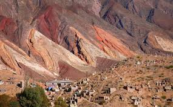
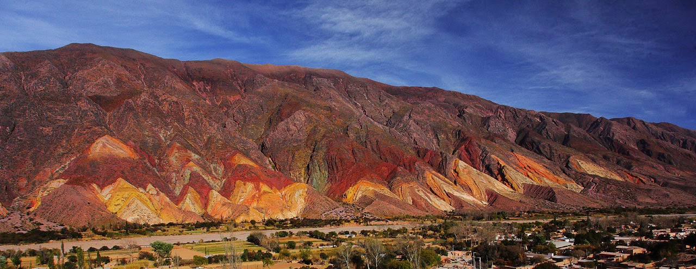
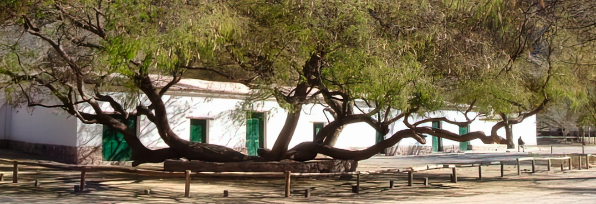
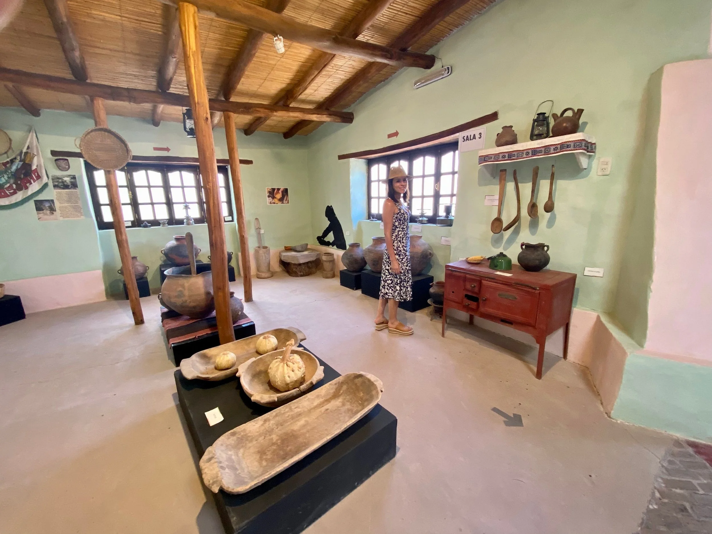

Es un pueblo apacible al norte de Tilcara, famoso por la Paleta del Pintor, un conjunto de montañas estriadas de ocres, rojos y azules que parecen un lienzo natural. El río Grande baña huertas y vegas junto al pueblo, aportando verde al entorno árido. En sus calles tranquilas se vive la vida de campo jujeño: chacras familiares, miradores serranos y artesanía local crean un ambiente auténtico y relajado.
¿Comó se llega?
En auto: Tomar la RN9 hacia el norte. Maimará está apenas 6–8 km antes de Humahuaca y a unos minutos de Tilcara. Desde Tilcara se sigue por la RN9 hacia Humahuaca para llegar.
En colectivo: Los ómnibus que van a Humahuaca suelen detenerse en Maimará. Hay varias frecuencias diarias desde San Salvador de Jujuy pasando por Purmamarca y Tilcara. (Por ejemplo, algunos servicios diarios incluyen paradas en Tilcara y Maimará.)
En avión: Como Tilcara; volar a Jujuy y luego colectivo o alquilar auto hacia la Quebrada.
Actividades que se pueden hacer
- El Puente Natural 
- Paleta del Pintor 
- Posta de Hornillos 
- Museo de la Vida Campesina de la Cooperativa de agricultores CAUQueVA

Gastronomia
Tiene una gran variedad de riqueza grastronomica, como cultural